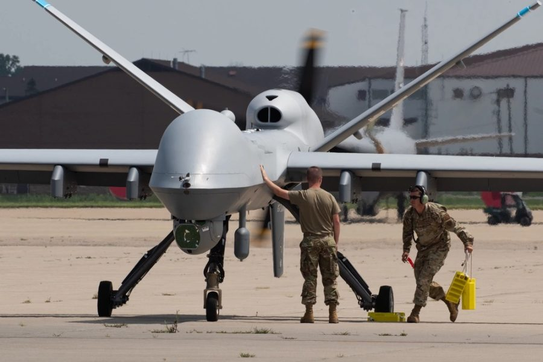
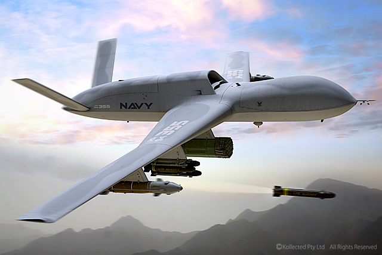
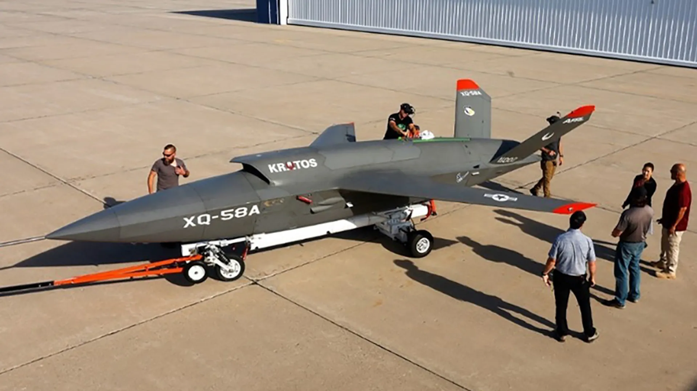
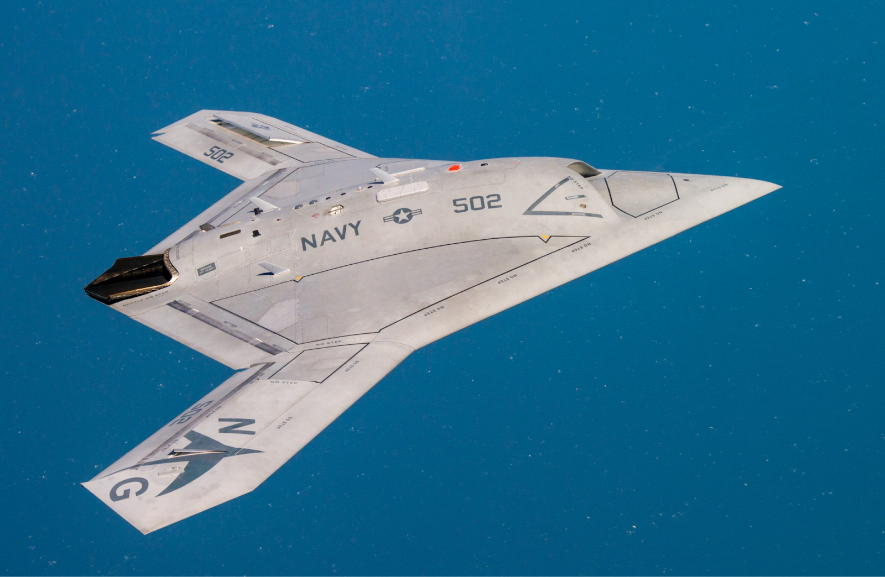

MQ-9 Reaper

MQ-9 Reaper adalah salah satu drone militer tercanggih yang digunakan oleh Angkatan Udara Amerika. Drone ini memiliki ukuran panjang 10,9 meter dan tinggi 3.81 meter dengan lebar sayap 20 meter dan berat kosong 2.222 kg. Mesin yang digunakan berjenis mesin turboprop Honeywell TPE331-10GD yang menghasilkan maksimum 900 tenaga kuda poros, memberikan kecepatan jelajah sekitar 230 mph. Drone ini diketahui bisa membawa 602 galon bahan bakar, memiliki jangkauan 1.150 mil, dan dapat terbang di ketinggian 152,4 meter selama lebih dari 27 jam untuk melakukan pengawasan dengan menggunakan kamera dan radar canggih. Kehebatan lainnya, drone Reaper ini bisa membawa muatan persenjataan seberat 1.700 kg untuk menyerang objek yang ditentukan.
Avenger
Drone tercanggih di dunia selanjutnya adalah Avenger yang ditenagai oleh mesin turbofan Pratt & Whitney yang menghasilkan daya dorong lebih dari 5.000 pon dengan estimasi waktu penerbangan lebih dari 20 jam. Drone ini diketahui bisa membawa muatan hingga 3.000 kg yang terdiri dari berbagai senjata, termasuk rudal Hellfire. Avenger tidak hanya diandalkan sebagai drone tempur saja. Pesawat tanpa awak ini juga bisa diandalkan untuk melakukan pengawasan dan misi militer menantang lainnya. Untuk melengkapi kecanggihannya, drone ini dilengkapi dengan kecerdasan buatan atau AI yang sudah diuji pada 11 April 2023 kemarin.

XQ-58 Valkyrie

QC-58 Valkyrie adalah pesawat tempur tanpa awak yang dirancang untuk menjalankan tugas sebagai wingman setiap. Drone ini ditenagai oleh mesin turbofan yang menghasilkan daya dorong maksimum sekitar 907 kg dan mampu melaju hingga kecepatan Mach 0,72. Selain kinerjanya yang hebat, drone ini juga sengaja di desain dengan bentuk trapesium yang membuat sayap melengkung ke belakang dan ekor berbentuk V. Desain ini dibuat untuk menghalangi alat pendeteksi dan pelacakan dari musuh.
X-47B
X-47B adalah pesawat tak berawak yang dikembangkan oleh Northrop Grumman untuk Angkatan Laut AS. Dari informasi yang beredar, drone yang masih dalam tahap pengembangan dan memiliki bentuk seperti kelelawar ini memiliki spesifikasi yang sangat mengesankan. Salah satu bocoran spesifikasinya, drone ini dapat beroperasi di ketinggian 12.192 m dalam kecepatan 600 mil per jam.
